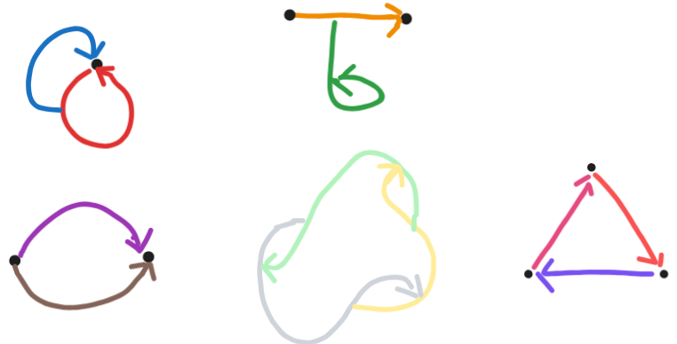
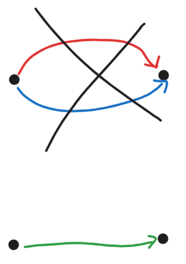
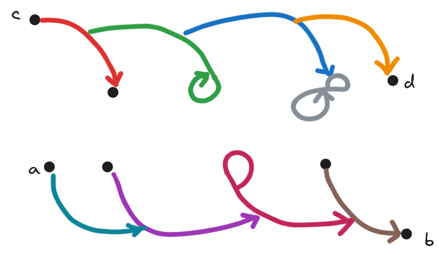
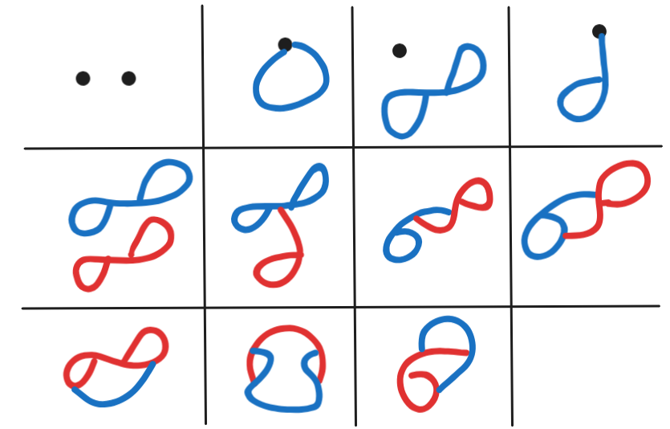

author: niplav, created: 2025-07-10, modified: 2025-10-24, language: english, status: in progress, importance: 3, confidence: likely
, the rest is commentary.
I am afflicted by a strange curse, which condemns me to be creative enough to find and explore new mathematical structures, but too dumb to prove anything interesting about them.
On a meditation retreat in 2022 I remembered a post by Scott Garrabrant and doodled the above image in my notebook, together with some other drawings of networks where edges can have edges as sources and sinks.
Recently, I got thinking about those kinds of graphs again, researched a bit and think I've discovered they've not been looked at in detail yet. I'll call those kinds of graphs or networks "pergraphs".
In this post I'll go a double track where I'll first and foremost draw pretty pictures to give the reader a visual sense of what they should be thinking about, and also provide Lean 4 code for definitions, theorems and proofs, as a barbell strategy in terms of rigour.
Intuition 1: Intuitively, a pergraph is a finite mathematical structure consisting of nodes and edges (which I'll also equivalently call "peredges"), where each edge needs to have a source and a sink. The source and the sink of an edge can be any node or edge, including itself.

Definition 1 (Lean): Given:
A pergraph is the tuple , where is a function that assigns each peredge a source and a sink.
Remark 1: A pergraph is more specifically a directed multi-pergraph, since peredges are directed, and two peredges can have the same source and the same sink. We will use the term "pergraph" for directed multi-pergraphs, and specify deviations from such.
Theorem 1 (Proof): Every quiver is also a pergraph, that is the pergraphs contain the quivers as a subset.
Intuition 1: Take any quiver . We can then construct a pergraph by assigning the to the vertex pernodes, to the peredges, and constructing by declaring for . Congrats! You've now constructed a pergraph from your quiver.
Remark 2: Since every directed graph is a quiver, all directed graphs are also pergraphs.
Definition 2 (Lean): A uni-pergraph is a pergraph with the additional constraint that no two peredges have the same source and the same sink, mathematically .

Definition 3 (Lean): An undirected pergraph is a a pergraph with undirected peredges, i.e. a pergraph where has the type signature .
Definition 4 (Lean): The source of a peredge is the vertex or peredge it comes from, the sink of a peredge is the thing it points to.
Definition 5 (Lean): A source-path is a sequence of edges so that each edge has as its source the previous edge; a sink-path is a sequence of edges so that each edge has as its sink the following edge. A pure path is a sequence of edges that is both a source-path and a sink-path.
Definition 6 (Lean): Two vertices are connected via a source-path if the source of the first edge is and the sink of the last edge is , and similar for sink-paths and pure paths.

Definition 7 (Lean): A mixed source-path, mixed sink path, and mixed pure path is a source-path, sink path and pure path with vertices mixed in, respectively.
Definition 8 (Lean): A source-cycle is a source-path that connects a vertex to or an edge to . One can define a sink-cycle, a pure cycle, a mixed source cycle, and a mixed sink-cycle similarly.
Remark 3: There's a variant of vertexless pure cycles that I like to call "keltic knots", where, if of any edge the sink is , the source of is .
Definition 9 (Lean: A sub-pergraph of a pergraph is a pergraph where the vertices are subsets of and the edges are a subset of . As is custom, a proper sub-pergraph of is a sub-pergraph of that isn't equal to ; an induced sub-pergraph of a pergraph is a sub-pergraph of where, for any pair of vertices or edges, all edges between those two components are also edges of , similarly to induced subgraphs.
Definition Ratking (Lean): A ratking is a pergraph without vertices.
Definition 10 (Lean): A rhizome is a non-empty pergraph without a proper sub-pergraph. We denote the set of all rhizomes with .
Question 1: Can we identify rhizomes in some easy way? E.g. "iff it has/lacks such-and-such of an edge you're looking at a rhizome".
Theorem 2: Every rhizome is either a single vertex or a ratking.
Intuition: A pergraph that has at least a vertex is either a single vertex or contains a single vertex as a proper sub-pergraph.
Remark 4: There are non-rhizomatic ratkings.
Remark 5: Ratkings, ordered by whether they are sub-pergraphs, form a lattice where the minimal elements are rhizomes.
Remark 6: Pergraphs, ordered by whether are sub-pergraphs, form a lattice where the minimal elements are rhizomes and a single vertex.
Theorem 3: Every pergraph can be constructed by
Theorem 4: Every pergraph has a unique perbasis.
Definition 11: Many pergraphs share a perbasis. For a given pergraph , the horde of with the perbasis is the set of all pergraphs with the same perbasis, and we write the equivalence relation (that is, iff they have the same perbasis).
Definition 12: A streber is a pergraph with the perbasis . The horde of all strebers is denoted by .
Remark 7: The set of strebers is way better behaved than the set of all pergraphs, simply due to the fact that they don't contain any rhizomes as sub-pergraphs.
Theorem 5: There are countably infinitely many finite pergraphs.
Intuition 5: There are finitely many pergraphs of size for any natural number, order by natural number, then for each natural number, order the pergraphs of that size however you like. You now have a bijection to the natural numbers.
Pseudo-vertex cycles, source-semi-ratkings, sink-semi-ratkings…
Pergraph isomorphism, sub-pergraph detection, pergraph rewrite rules (ratking collapse, flip equivalence (flipping peredges results in an isomorphic pergraph)).
Euler cycles and Hamilton cycles, decomposing into rhizomes, enforcing some kind of hierarchy/partial hierarchy? Generating pergraphs from a simpler set with simpler rules?
Bijection/injection with the directed graphs? Needs to blow up the directed graphs.
Unlabeled pergraphs are counted up to isomorphism for renamings of vertices and peredges.
One can count equence of pergraphs with constituents, starting at n=0:
1, 2, 15, 180, 3638, …
This sequence is not yet in the OEIS.

Code for computing the first terms of the sequence here.
The sequence that that counts the number of unlabeled undirected pergraphs, up to isomorphism, starting at n=0:
1, 2, 10, …
Here's the undirected pergraphs with two components:

As a variant one could ditch the vertex entirely, and replace them self-sourced and self-sinked peredges. I think that one has different combinatorial behavior.
Pergraphs are a generalization of directed graphs (i.e. every directed graph is a pergraph), but I don't know what known mathematical structure they're a special case of. Claude Opus 4.1 suggests it might be a special case of 2-categories, but I don't think that's true85%.
{directed, undirected} edges×{allows, disallows} multi-edges×{allows, disallows} loops×{allows, disallows} hyperedges×{allows, disallows} edges between other edges×{allows, disallows} edges from/to themselves×{allows, disallows} edges between arbitrary sets of vertices.
Pergraphs are distinct from hypergraphs, as they don't allow for an edge between more than two nodes; they are not multigraphs, because pergraphs allow for edges from/to edges (similar to multigraphs, they allow for multiple edges between the same two nodes); they are distinct from higraphs, as they don't allow for nested vertices; they are different from Petri nets, because they don't have movable tokens; they are not the same as metagraphs, because they again allow for edges between (nested) collections of nodes. They are probably different from categories and n-categories, because they don't require composition and don't enforce any kind of hierarchy, but I don't know enough category theory to confirm that.
The closest I've found to this concept is in this unsourced section on the Wikipedia article on hypergraphs:
Alternately, edges can be allowed to point at other edges, irrespective of the requirement that the edges be ordered as directed, acyclic graphs. This allows graphs with edge-loops, which need not contain vertices at all. For example, consider the generalized hypergraph consisting of two edges and , and zero vertices, so that and . As this loop is infinitely recursive, sets that are the edges violate the axiom of foundation. In particular, there is no transitive closure of set membership for such hypergraphs. Although such structures may seem strange at first, they can be readily understood by noting that the equivalent generalization of their Levi graph is no longer bipartite, but is rather just some general directed graph.
The generalized incidence matrix for such hypergraphs is, by definition, a square matrix, of a rank equal to the total number of vertices plus edges. Thus, for the above example, the incidence matrix is simply
The concept appears under-developed, and slightly different from what I'm pointing at.
Many thanks to Claude 4 Sonnet and Claude 4 Opus for several long conversations which fleshed out the concept, talked through the pergraphs with , help with learning Lean, and help with writing the Rust code for the enumeration.
I provide Lean 4 definitions and proofs for pergraphs, related structures, and the theorems in this text.
inductive PerNode (V E : Type) : Type
| vertex : V → PerNode V E
| edge : E → PerNode V E
structure Pergraph (V E : Type) where
e : E → PerNode V E × PerNode V E
def Quiver.toPergraph {V : Type} [Quiver V] :
Pergraph (V ⊕ (Σ (a b : V), a ⟶ b)) (Σ (a b : V), a ⟶ b) where
e := fun arr@⟨a, _b, _h⟩ => (PerNode.vertex (Sum.inl a), PerNode.vertex (Sum.inr arr))
That function is injective:
theorem quiver_to_pergraph_injective {V : Type} [Quiver V] :
Function.Injective (@Quiver.toPergraph V _).e := by
intros e₁ e₂ h_eq
simp [Quiver.toPergraph] at h_eq
-- simp already gives us e₁ = e₂, so we're done
exact h_eq.2
def UniPergraph (V E : Type) : Type :=
{ p : Pergraph V E // Function.Injective p.e }
structure UndirectedPergraph (V E : Type) where
e : E → Sym2 (PerNode V E)
def source (G : Pergraph V E) (edge : E) : PerNode V E :=
(G.e edge).1
def sink (G : Pergraph V E) (edge : E) : PerNode V E :=
(G.e edge).2
def SourcePath (G : Pergraph V E) : List E → Prop
| [] => True
| [_] => True
| e₁ :: e₂ :: rest => G.source e₂ = PerNode.edge e₁ ∧ SourcePath G (e₂ :: rest)
def SinkPath (G : Pergraph V E) : List E → Prop
| [] => True
| [_] => True
| e₁ :: e₂ :: rest => G.sink e₁ = PerNode.edge e₂ ∧ SinkPath G (e₂ :: rest)
def PurePath (G : Pergraph V E) (path : List E) : Prop :=
SourcePath G path ∧ SinkPath G path
def connectedViaSourcePath (G : Pergraph V E) (start finish : PerNode V E) (path : List E) : Prop :=
SourcePath G path ∧
(path.head?.map G.source = some start) ∧
(path.getLast?.map G.sink = some finish)
def connectedViaSinkPath (G : Pergraph V E) (start finish : PerNode V E) (path : List E) : Prop :=
SinkPath G path ∧
(path.head?.map G.source = some start) ∧
(path.getLast?.map G.sink = some finish)
inductive MixedPath (G : Pergraph V E) (dir : Pergraph V E → E → PerNode V E) (codir : Pergraph V E → E → PerNode V E) : List (PerNode V E ⊕ E) → Prop
| empty : MixedPath G dir codir []
| single_vertex (v : PerNode V E) : MixedPath G dir codir [Sum.inl v]
| single_edge (e : E) : MixedPath G dir codir [Sum.inr e]
| vertex_then_edge (v : PerNode V E) (e : E) (rest : List (PerNode V E ⊕ E)) :
dir G e = v →
MixedPath G dir codir (Sum.inr e :: rest) →
MixedPath G dir codir (Sum.inl v :: Sum.inr e :: rest)
| edge_then_edge (e₁ e₂ : E) (rest : List (PerNode V E ⊕ E)) :
dir G e₂ = PerNode.edge e₁ →
MixedPath G dir codir (Sum.inr e₂ :: rest) →
MixedPath G dir codir (Sum.inr e₁ :: Sum.inr e₂ :: rest)
| edge_then_vertex (e : E) (v : PerNode V E) (rest : List (PerNode V E ⊕ E)) :
codir G e = v →
MixedPath G dir codir (Sum.inl v :: rest) →
MixedPath G dir codir (Sum.inr e :: Sum.inl v :: rest)
def MixedSourcePath (G : Pergraph V E) : List (PerNode V E ⊕ E) → Prop :=
MixedPath G source sink
def MixedSinkPath (G : Pergraph V E) : List (PerNode V E ⊕ E) → Prop :=
MixedPath G sink source
def SourceCycle (G : Pergraph V E) (node : PerNode V E) (path : List E) : Prop :=
connectedViaSourcePath G node node path
def SinkCycle (G : Pergraph V E) (node : PerNode V E) (path : List E) : Prop :=
connectedViaSinkPath G node node path
def PureCycle (G : Pergraph V E) (node : PerNode V E) (path : List E) : Prop :=
PurePath G path ∧
(path.head?.map G.source = some node) ∧
(path.getLast?.map G.sink = some node)
def MixedCycle (G : Pergraph V E) (dir : Pergraph V E → E → PerNode V E) (codir : Pergraph V E → E → PerNode V E)
(node : PerNode V E) (path : List (PerNode V E ⊕ E)) : Prop :=
MixedPath G dir codir path ∧
(match path.head? with
| some (Sum.inl v) => v = node
| some (Sum.inr e) => dir G e = node
| none => False) ∧
(match path.getLast? with
| some (Sum.inl v) => v = node
| some (Sum.inr e) => codir G e = node
| none => False)
def MixedSourceCycle (G : Pergraph V E) : PerNode V E → List (PerNode V E ⊕ E) → Prop :=
MixedCycle G source sink
def MixedSinkCycle (G : Pergraph V E) : PerNode V E → List (PerNode V E ⊕ E) → Prop :=
MixedCycle G sink source
def nodeInSub (vp : V → Prop) (ep : E → Prop) : PerNode V E → Prop
| PerNode.vertex v => vp v
| PerNode.edge e => ep e
structure SubPergraph (G : Pergraph V E) where
vertices : V → Prop
edges : E → Prop
edge_endpoints : ∀ e, edges e →
nodeInSub vertices edges (G.source e) ∧ nodeInSub vertices edges (G.sink e)
def isProperSubPergraph (S : SubPergraph G) : Prop :=
(∃ v, ¬S.vertices v) ∨ (∃ e, ¬S.edges e)
def isInducedSubPergraph (S : SubPergraph G) : Prop :=
∀ e, nodeInSub S.vertices S.edges (G.source e) →
nodeInSub S.vertices S.edges (G.sink e) →
S.edges e
def isRatking (G : Pergraph V E) : Prop :=
IsEmpty V
def isNonEmpty (_ : Pergraph V E) : Prop :=
Nonempty V ∨ Nonempty E
def isRhizome (G : Pergraph V E) : Prop :=
isNonEmpty G ∧ ∀ (S : SubPergraph G), isProperSubPergraph S → False